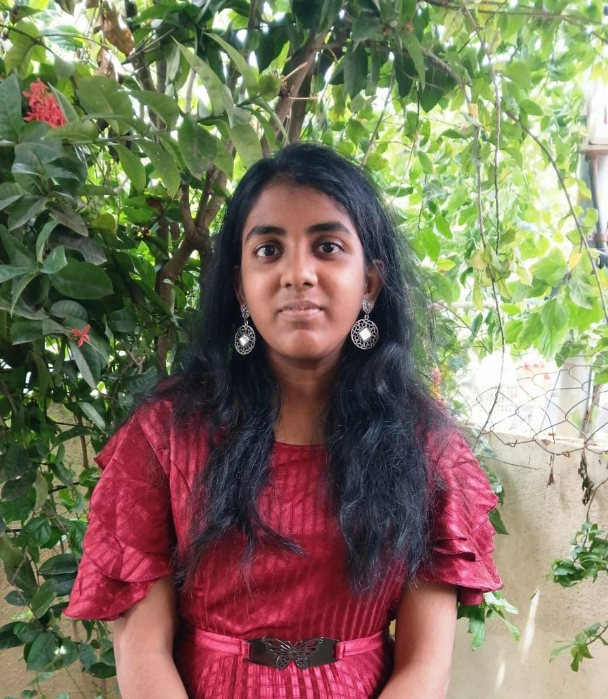
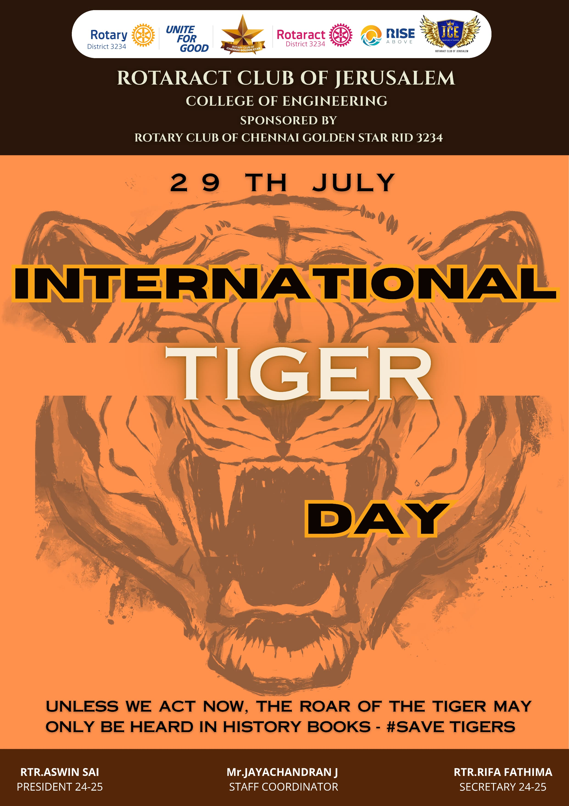
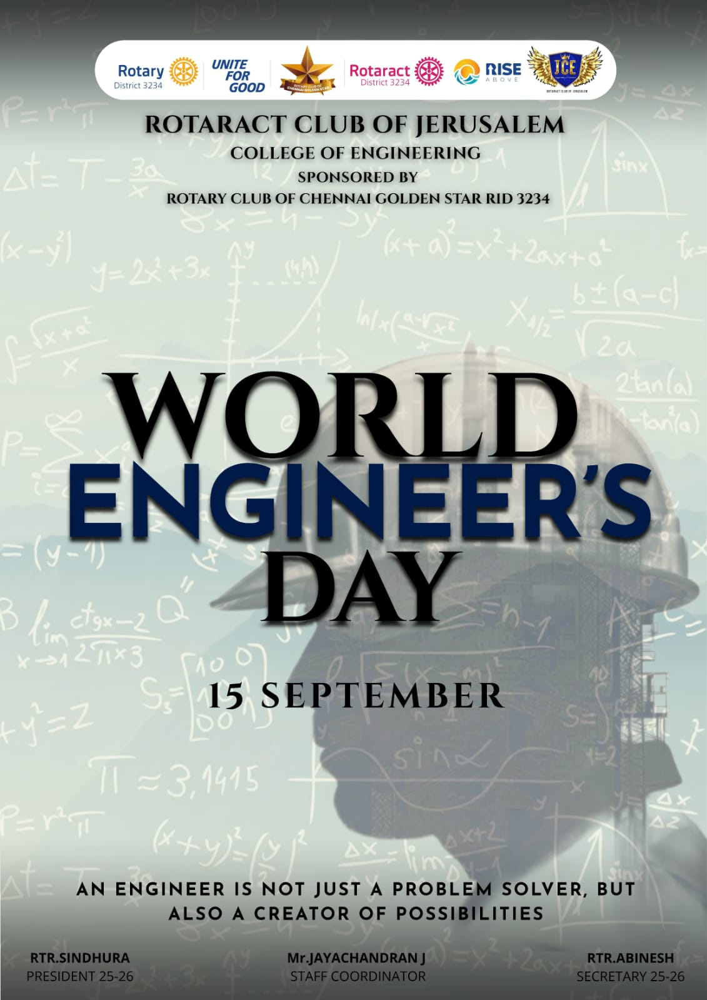
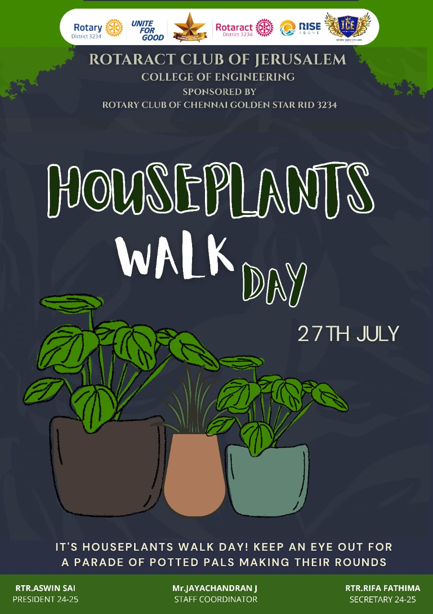
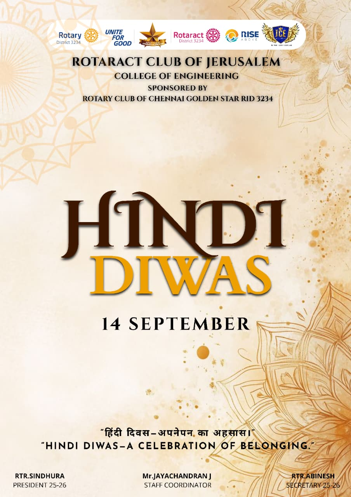
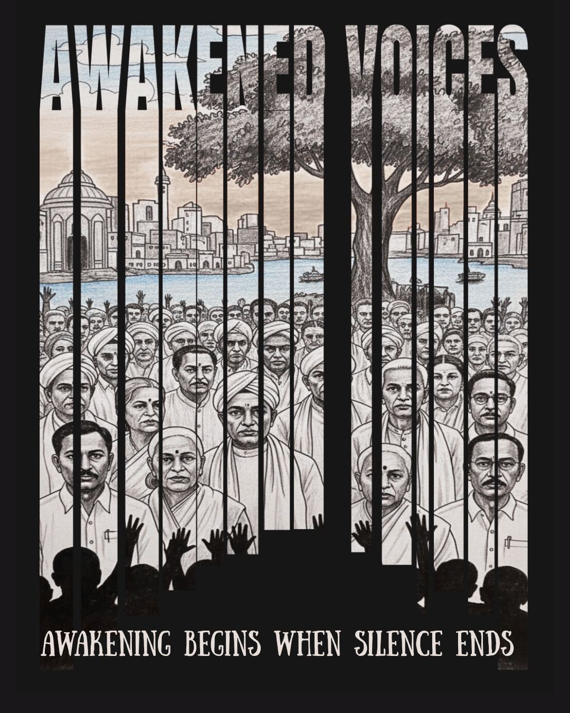
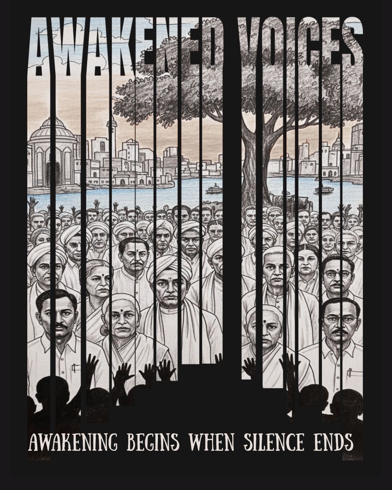

Persis Tafflin
About
A computer science student, pursuing second-year B.Tech CSBS at Jerusalem College of Engineering.
I'm passionate about technical, designing and writing fields.
In the technical field, I've explored C, C++, Java, Python, HTML, CSS, JavaScript, Angular, SQL, Excel, etc.
I've explored technical platforms like VS Code, IDLE, Turbo C/C++, Github, BigQuery, Jupyter Notebook, Google Colab, etc.
Has GFG coding score 100+ (Solved logical problems, Data Structures in Python) and completed the 30 Days JavaScript challenge on LeetCode.
I have explored graphic designing platforms like Canva, Inkscape, and video-editing platforms like DaVinci Resolve.
I’m also learning content writing, SEO writing, ghostwriting, and creative writing.
Passionate to learn more and looking for opportunities to gain hands-on experience through projects, internships, or collaborations.
Education
- Jerusalem College of Engineering | B.Tech CSBS | 2024-2028 | Grade: A+
- Prince Srivari Senior Secondary School | HSC | 2023-2024 | Percentage: 84%
- Prince Srivari Senior Secondary School | SSLC | 2021-2022 | Percentage: 90.4%
Skills
Languages: C, C++, Java, Python, HTML, CSS, JavaScript, Firebase, Angular, SQL
Technical platforms: Explored VS Code, IDLE, Turbo C/C++, Github, BigQuery, Jupyter Notebook, Google Colab
Editing Tools: Canva, Inkscape, DaVinci Resolve, Unity
Other: Presentation & communication skills
Projects
- Boutique website using HTML, CSS, JS
- Chest collecting game in Unity (C#)
Links
Languages
- English – Fluent
- Tamil – Native
- Hindi – Basic
- German – A1
Experience
- Associate Creative in Rotaract Club-Designer
- Managed some events in Rotaract
- IE(I) council -Executive member
- IIC Council
CERTIFICATIONS
- Unity Certification
- SEO Certification from Hubspot Academy
- Front-end Full stack Java Development from coursera
- Content Marketing from Hubspot Academy
AWARDS
- Technovanza 24'( a Technnical Symposium )-secured first prize in Paper presentation, conducted at JCE
- IIT Pals Innowah-paper presentation- Had an opportunity to build a prototype of my project idea
MY DESIGINING PORTFOLIO
Some of my posters designed for my Rotaract Club, and competitions -designed as part of my design learning and practice.
    
